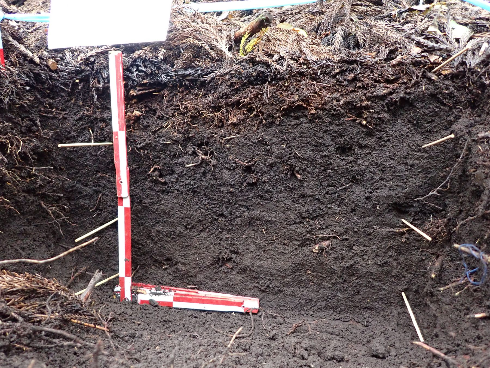

Dynamics of soil microbial communities across spatio-temporal scales
Soil bacterial and fungal communities are not static. Along elevational gradients in cool-temperate montane forests, their diversity tracks plant functional diversity and soil properties, saprotrophic and ectomycorrhizal fungi follow contrasting richness patterns, and whole communities turn over with the seasons. At the scale of a single headwater catchment, slope position reshapes the litter and mineral soil layers and, with them, the bacteria that live there.
I combine repeated field sampling across elevations, catchments and years with amplicon sequencing and long-term manipulation experiments, such as throughfall exclusion, to ask what drives these patterns at each scale.